Published: 2023-11-14
Source link: https://www.cnphotos.net/academy/show-159.html
■ Interviewee | Shao Yajie
■ Reporter | Zhang Yue
■ Editor | Zhou Yimeng
■ Editor in chief | Chen Xiaojun
The China Photo Network top-ten photographer award selects the best work of each year. It encourages and honors outstanding photographers who achieve in artistic photography. It spurs their creativity and brings forward more work that speaks to the new era, shows the striving of the people, lifts the national spirit, and fosters noble feeling.
The 2022, fifth, top-ten photographer award went through displays of selected work, public voting, a final review by a jury of noted photographers and scholars, and a public notice period. It then confirmed this year's top-ten photographers and the nominees.
To further bring out and show the classic work and creative journey of the photographers, and to build a wider space for display and exchange, China Photo Network will now send reporters and editors to interview the top-ten winners. The interviews tell the stories behind their work. An album of the top-ten photographers will follow.
This issue presents an interview with the photographer Shao Yajie.
Editor's note
Preface
Shao Yajie is the child of workers at the Tianjin Chemical Plant. From childhood he treated the plant as his home, and after graduation he was assigned straight back to it, working a full 42 years until retirement. In the era when enterprises ran society, the plant gave hope for life to many people in Hangu. Later, for many reasons, the plant declined and ran losses year after year. On a cold spring day, March 5, 2016, the 78-year-old plant halted production. This spiritual home, where Shao had lived almost his whole life, came crashing down along with its chimney. Yet the past cannot be erased by time. It turned into a hidden mark, the base tone of his life and the foundation of his work.
In the 1980s, several printmaking groups arose in China, such as Dalian Print, Beidahuang Print, Tanggu Print, and Hangu Print. Shao Yajie, then in the art group of the Tianjin Chemical Plant, was a key member of the Hangu Print group. Because he knew everything and everyone in the plant, he could catch its character. He gradually worked out his own way of expressing things, using dots, lines, and planes to render the crisscrossing production pipes, color blocks for the storage tanks standing around the site, and dots for the workshops that covered the whole plant. Later, when the plant set up a newspaper, his creation turned to photography, and he applied his printmaking experience to his photos. Printmaking and photography are alike but also different. Printmaking turns a two-dimensional source image into a two-dimensional plate by physical and chemical means, while photography converts a three-dimensional natural form into a two-dimensional negative by optical and chemical means. After decades of working inside the plant, Shao observed the real life of the factory from within, which photographers who shoot the plant from a curious outsider's view do not have.
For Shao, the Tianjin Chemical Plant is both nostalgia and pain, a long farewell. For decades, he used his camera to preserve its former glory. When the plant was demolished, he took on the duty of a photographer and shot a large body of work of the demolition, as comfort and a memorial for himself. Yet the past is gone. Life is endless, and photography is endless. Shao will, as always, use his camera to express our time and our people.
Zhang Yue
November 9, 2023
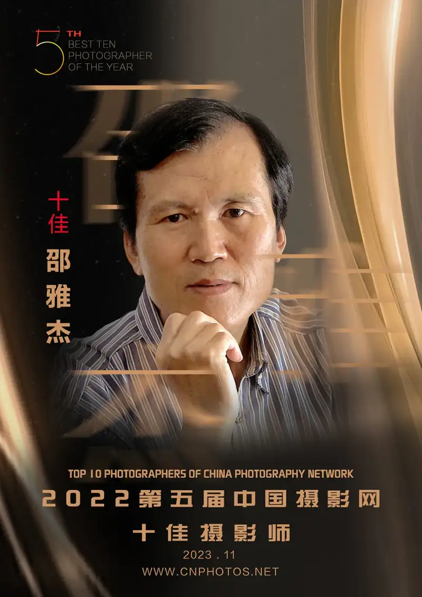
Shao Yajie was born in Hangu, Tianjin, in 1957. He was an art editor and reporter at the Butian Chemical newsletter of the Butian Chemical Company. He is a member of the Chinese Photographers Association, the Chinese Society for Art Photography, and the Chinese Printmakers Association, a director of the China Chemical Photographers Association and the China Chemical Calligraphers and Painters Association, and a member of the Tianjin Artists Association. He is a Tianjin workers' artist and was named one of the first dual-virtue workers' artists of Tianjin's Binhai New Area. He is a signed photographer of China Photo Network.
His work has won first, second, and third prizes in national photography exhibitions and competitions. He has held four industrial photography art shows, in Binhai New Area and Tianjin, and has published a collection of his photos and prints.
Zhang Yue, reporter for China Photo Network: I see that you are a member not only of the Chinese Photographers Association, but also of the Chinese Printmakers Association and the Tianjin Artists Association. You must have achieved something in the fine arts. Were you a painter at first? Why did you move from the fine arts to photography?
Shao Yajie, China Photo Network top-ten photographer:I loved art from primary school, and in middle school I often helped the factory union draw. So when I was assigned after graduating middle school in 1975, I went straight to the art group of the Tianjin Chemical Plant union. From then on, I did many jobs: writing slogans, changing display windows, painting posters, and taking a camera down to the production line to photograph the monthly best good deeds at the plant. It was tiring, but it built me up and gave me drive.
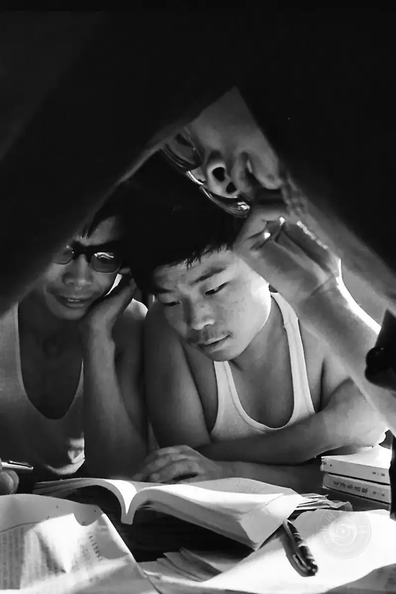
Studying the Selected Works of Mao, shot in Hangu, Tianjin, in the 1980s.
Back then, many study groups for the Selected Works of Mao Zedong were set up among the workers at the plant.
In the 1980s, print groups such as Dalian, Beidahuang, Tanggu, and Hangu Print arose, and I was a key member of the Hangu group. From then on, I held a camera in one hand, a brush in the other, and a sharp woodcut knife for printmaking. Because I loved the plant to my bones and knew it and its workers well, my prints were praised by fellow workers and experts. Works such as Chemical Symphony, Mighty Force, Time, Lifeline, and People, Colorful Life, Morning Tune, Decision, and Momentary Calm were shown at the National Art Museum of China in the Hangu Print Art Exhibition. The noted critic and aesthetician Wang Chaowen praised them. He said the Hangu prints felt warm, and that some industrial works do not merely reproduce the surface of life but express the workers' feeling, pride, and responsibility toward labor and life. The noted printmaker Zhang Zuoliang said that the mechanical combinations Shao depicted were solid and weighty, yet still light and fluid. He added that industrial work rarely reaches a strong artistic result, but these works hold beauty, novelty, and force. So many of my prints were shown in France, Japan, Hong Kong, and Shenzhen. Mighty Force also took part in the National Print Art Exhibition and was collected by the National Art Museum. This success laid a good base for my later photography: life is the source of artistic creation, and truth is the life of an artwork. My prints also appeared in Fine Arts, Printmaking World, China Pictorial, and Poetry. Later, when the plant set up a newspaper, I already loved photography, so I left the art group and became a staff photographer and a true little reporter for the company paper. With this very different platform, I began to publish photos in newspapers and magazines. In recent years, especially on the official accounts of major media, I have published a large body of work, and my name has gradually entered photography circles.
Zhang Yue: When the plant set up its newspaper, what was it called? Why do you call yourself a little reporter?
Shao Yajie:The newspaper that started was the Tianjin Chemical News. In 1990, I moved to the paper as an art editor and reporter. Because we ran a company paper, not a professional public media outlet, our reporting and shooting stayed inside the plant grounds, so for many years we called ourselves little reporters.
Zhang Yue: I read online that some of your photos look like prints. What do you think of your own prints? How do you see the relation between printmaking and photography? Do you think a background in art helps in photographic creation? If so, how exactly?
Shao Yajie:It shows mainly in composition, color handling, and the contrast of tone. My work tends toward the simple rather than the busy, with bright color and a decorative feel, and these forms stand out strongly in my art. My prints rely mainly on dots, lines, and planes, with large color blocks as support. Together with my deep knowledge of the plant, this became my own way of expression. In fact, the handling of dots, lines, and planes is the composition of your emotion, and the so-called feature is simply familiarity with the plant. Those of us who are older know that, in the seventies and eighties, when offices and factories did propaganda, they could not do without blackboard headlines, and many used plant subjects for the masthead. Such work works as propaganda, but it is far from enough as an artwork, because it is broad and popular, not created by an artist from his own feeling. I could catch the character of the plant, because we produced chemicals, so I used dots, lines, and planes to show my plant. In my prints, I turned dots into the workshops across the site, lines into the crisscrossing pipes, and planes into the storage tanks. Through abstraction, and by using the different colors that chemical pipes carry, I gained a way of showing the plant and expressing my own mind. With the subject and the form joined well, the print naturally took on a distinctive composition, an eye-catching look, and novelty.
Knowing the fine arts helps you understand form, and it sharpens your feel for composition, light, and color, which in turn helps artistic thinking. When I did printmaking, I already had this sense, because I understood the laws, traits, and essence of art. So the industrial prints I made in the eighties and nineties won expert praise, and later, when I picked up a camera, photography came easily. Many friends who saw my work said it carried the shadow of printmaking. Yes, because the arts are connected. Dots and lines and planes, square and round, large and small, many and few, all these contrasts carry their own subjectivity in both printmaking and photography, and that subjectivity is personality.
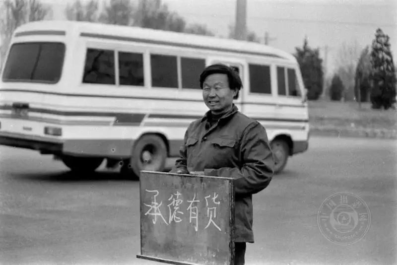
Street Advertisement, shot in Beijing in the 1980s.
On the street, a farmer holds a sign to signal that he will haul goods for hire.
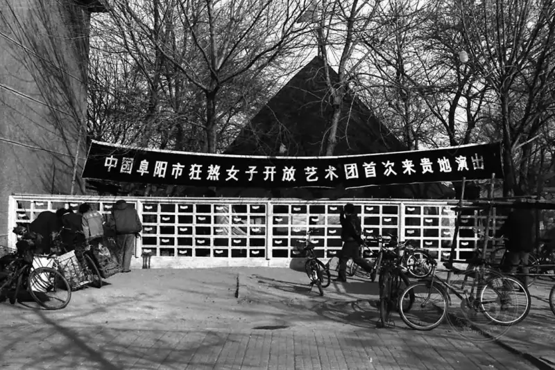
Attraction, shot in Hangu, Tianjin, in 1995.
When banners with such words appeared outside the park in the 1990s,
they were sure to catch the eyes and imagination of some people.
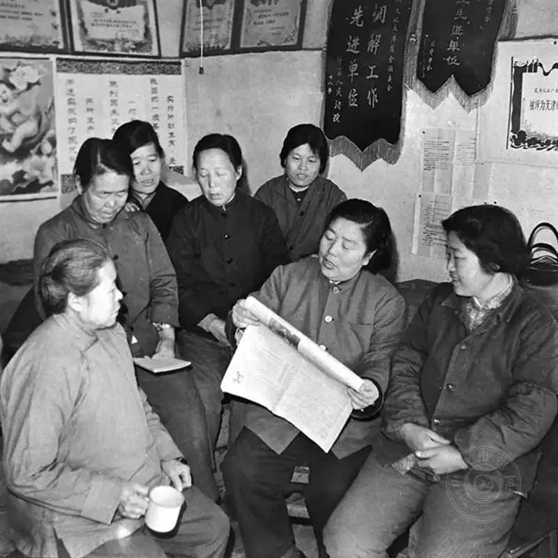
Daily Reading, shot in Hangu, Tianjin, in 1983.
In the 1980s, street crews were mostly made up of older women,
and here the women of the south section of Hangu New Village are reading the newspaper and studying.
Zhang Yue: From your early work, I see that, like many veteran photographers, you also began with a Seagull 120 twin-lens camera. I have great respect for photographers who started on this camera, because it is full of the character of our national industry.
Shao Yajie:Yes, it was not only a brand of national industry but also the favorite camera of photographers at the time. It was inconvenient to use, but the medium-format image quality was good, and that was its greatest strength. You are right. It was a product of its age, so the photos it took naturally carry a strong stamp of the times. Most of the photos in my 2005 industrial photography art show and collection were shot with a 120 Seagull.
Zhang Yue: I also see that you have forty years of photography behind you, and your work carries a sense of an era that my generation did not live through. Watching your work in sequence, I can see that the life of ordinary Chinese people has truly kept changing. It makes me feel that the longer the time span of documentary photography, the more precious it becomes. But when everyone's life was so tight, how did you have so much film to record such ordinary daily life?
Shao Yajie:I owe this to luck. From the day I fell for photography, I was already doing propaganda work at the plant, so the equipment for developing, enlarging, and shooting belonged to the enterprise. In the seventies and eighties, we used every roll of film very carefully. To save money, when using 135 film, I bought bulk film in a metal roll, cut it into 36-exposure lengths, and wound it into cassettes, sometimes even cutting the leaders. Knowing how to value it, I also knew what I should shoot, express, and pursue.
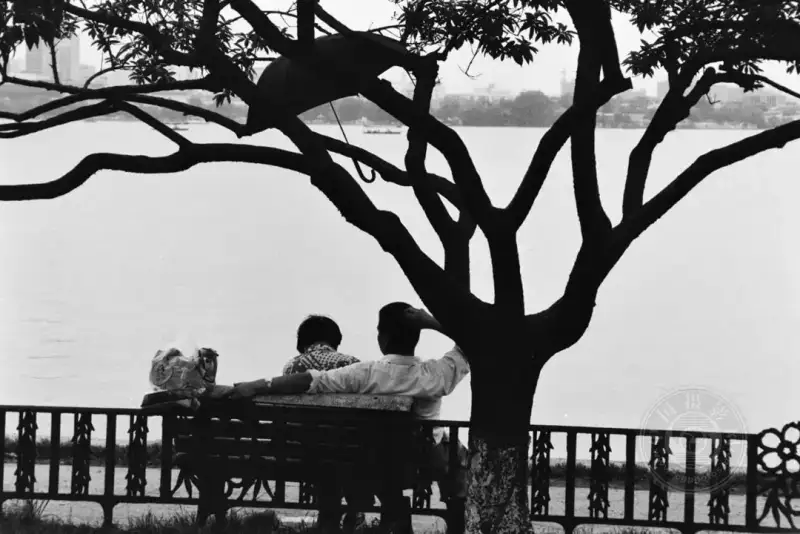
The Umbrella, shot in Hangzhou, Zhejiang, in 1992.
At West Lake in Hangzhou, people either sightsee by boat or stroll to enjoy the view,
and when they are tired, a bench is the best place to rest and to court.
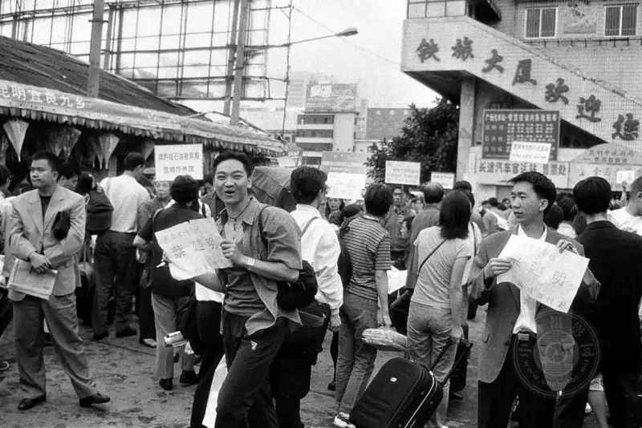
Hangzhou, the City of Meetings, shot in Hangzhou, Zhejiang, in 1996.
In the 1990s, whatever meeting you held, you chose an interesting place for it,
and Hangzhou was the best choice,
so scenes like this were everywhere at the railway station exit..
Zhang Yue: I see many of your works from the eighties and nineties, such as Daily Reading, Studying the Selected Works of Mao, Attraction, Packing Up for Father, and The Watchtower, and the Beijing works of the same era, Chinese and Foreign Focus, Street Advertisement, Morning News, Five Thousand Years, Buying an Official Seat, and North and South of the Great Wall. They all carry a strong sense of the times, as do your shots in Zhejiang and Hebei, such as The Umbrella, Hangzhou, the City of Meetings, and The Boat Master Becomes the Boat Boss. When you shot these, was it self-expression or the work needs of a reporter?
Shao Yajie:It was all self-expression. I think a photographer needs an eye for discovery, a news sense, and an editorial sense. With these three, when you face real life, you know what to shoot and how. These works had nothing to do with my job, but everything to do with the qualities of a photojournalist. For years I have held to a principle: in shooting, I do not chase the big, but reflect the small; I do not chase the surface, but reflect the essence.
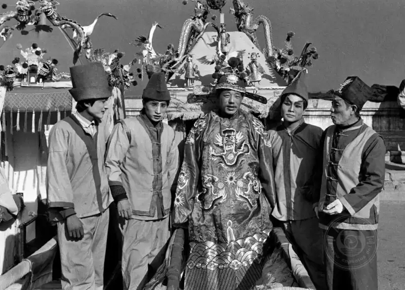
Buying an Official Seat, shot in Beijing in 1993.
When people have money in their pockets, they have more ideas,
and this man spent twenty yuan to live out a five-minute official's thrill,
and to enjoy the taste of riding in a sedan chair.
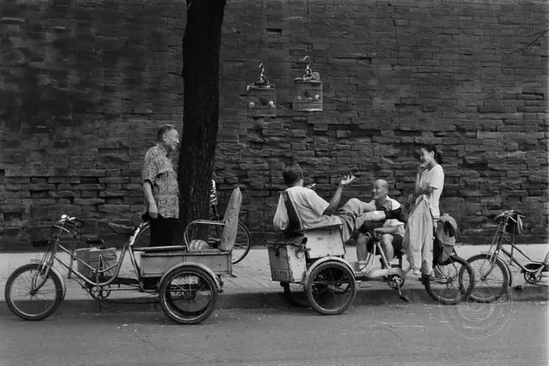
Morning News, shot in Beijing in 1997.
In the morning, beneath the corner of the imperial wall,
people chat about everything under the sky.
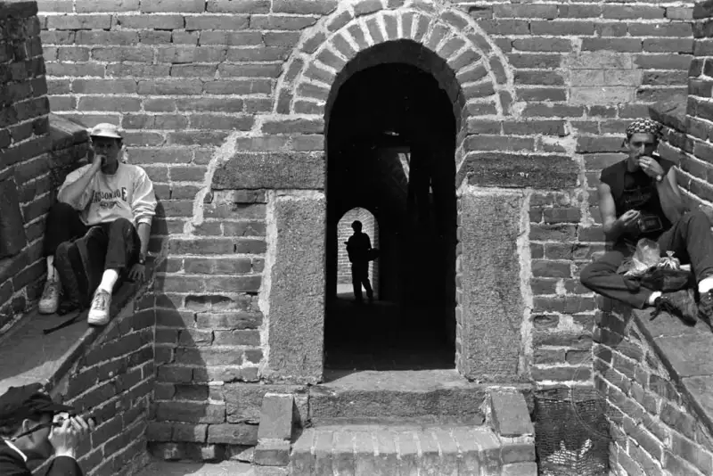
North and South of the Great Wall, shot in Beijing in 1992.
Foreign and Chinese tourists on the Badaling Great Wall.
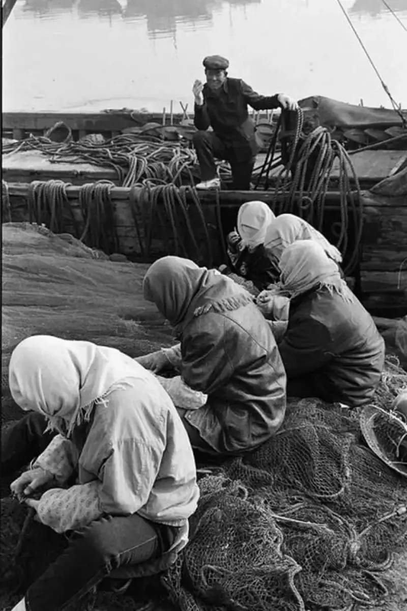
The Boat Master Becomes the Boat Boss, shot in Fengnan, Hebei, in 1998.
A market economy can change social roles,
and when fishermen who once went out to sea have money,
they can also hire others to go out fishing and to weave nets.
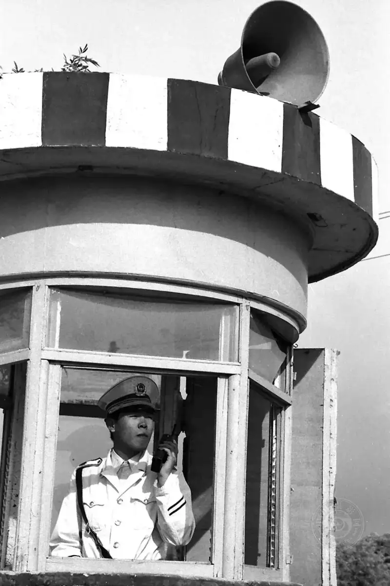
The Watchtower, shot in Hangu, Tianjin, in the 1980s.
In the earliest days, transport in my hometown was very backward, and watchtowers were even rarer.
Zhang Yue: I also saw your series The Look of a State online, especially the works about children's life, such as The Child Doing Homework on the Street in the Eighties and The Child Keeping Father's Stall After School in the Eighties. I like them very much. Their titles are just a few or a dozen words, a simple reading of the work, but I find it not enough. Why not tell us more about your own feelings?
Shao Yajie:In that era, I saw many such scenes and felt them deeply, because I had lived them. My parents both worked at the plant. When I was very small, no one looked after me after school, and I sometimes waited on a stone block at the gate of the big courtyard for my mother to finish work. Late at night, when she was still working overtime, I had waited so long that I fell asleep on the stone. So after I joined the plant paper in the 1990s, I took a correspondence course at the Shijiazhuang Literature and Art College and the Shijiazhuang Humanities Correspondence Center. When the prose writing course ended, the teacher asked us for an assignment, and I wrote my first piece of literature after starting work. In shaping it, I recalled the feeling of waiting for my mother to come home at night as a child. I called it Waiting, and it goes like this: As a child, I liked the stone lion on the gray-brick gate. It waited, as I did, head up and silent. The earth turned deep blue, and in the dark I heard my mother call. I ran up: Mother, I have waited so long for you to come back. Mother, why do you say there are eyes blinking in the sky, and a big round cake hanging above, with a bite taken out by someone? I want it too. Good child, you are hungry. Forgive Mother for coming home so late. The eyes in the sky are bright stars, and the round cake is the moon. Childhood and the stone lion are both gone now. In the sunset, a figure stands at the gate, bright as if gilded. Is this my childhood dream? No, it is a loving mother waiting for her child to return. I did not expect the assignment to be published in their school paper. When the piece appeared in our plant paper, it also won praise from many readers. In fact, I feel for these children, because in them I see my own growing up and experience, but compared with the hardships of our generation, they are far better off.
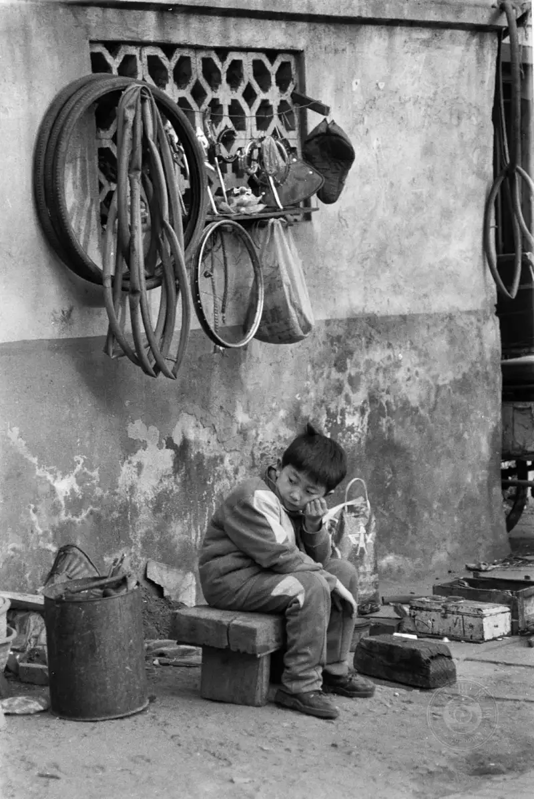
Keeping Father's Stall, shot in Beijing in 1993.
On a street in a residential area, a child who has just come home from school.
Zhang Yue: You also said that the expression shown in that instant was an unguarded, true state, even a state of the self, and that it made you feel the full range of life, from helplessness and pain to surprise, anxiety, worry, delight, optimism, and confidence. I would like to hear your more specific feelings about this series.
Shao Yajie:Though The Look of a State shows ordinary people from all levels of society, it is really showing myself. In my 2015 solo show, one panel did not hold a photo but a passage from my essay Enjoyment, with these lines: enjoy life, enjoy living, enjoy pain, enjoy hardship, enjoy the process, enjoy tears, enjoy the night, enjoy thunder, enjoy music, enjoy nature, enjoy art, enjoy tomorrow. I especially love solitude. When I am alone, the space in front of me feels very large. I think a person's state is the barometer of how we read the world.
Zhang Yue: I see that you began photographing women workers as early as 1975, when you first joined the plant, and later you published a series called Forty Years of Photographing Women Workers. For my generation, those photos from the 1980s may feel more interesting, because we did not live through that era. Do you still follow the life of women workers?
Shao Yajie: Not now. The plant where I worked stopped production in 2016, affected by the environment. But I still savor the scenes of photographing women workers in the plant. The women workers were the flowers of the plant, its larks, its smiling faces, and its calling card. When you photographed them, you were caught by their mood and felt happy. Over the years, I shot a large body of work of them. Many of my news photos about their lives, such as Women Are Born to Smile, Another Full Score, and The Happy Mothers, were also published in China Photography News and Workers' Daily.
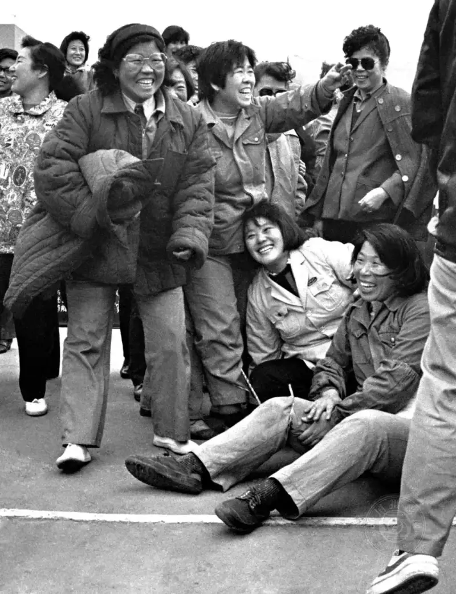
The Happy Mothers, shot in Hangu, Tianjin, in 1991.
A fun sports day for the women workers of the Tianjin Chemical Plant.
Zhang Yue: I see that you held four solo photography shows, such as the Industrial Photography Art Exhibition and The Collision of Heart and Steel, and published a collection. Can you talk about your shows and share your collection with readers?
Shao Yajie:The four shows were four different feelings and four different inner shocks. The first was in 2005, first in Binhai New Area and then in our district. At that time, the plant of the eighties and nineties was still bustling, production was growing, and the workers had drive. So the works radiated an upward force, and the show won the approval of the head of the city photographers' association. The photos and prints were then published as The Industrial Photography and Print Art of Shao Yajie. The third was in 2014, at home, and most of the works were recent. Its theme was The Collision of Heart and Steel. I chose these words because our old chemical plant had taken a heavy blow from the market in recent years. Products piled up with no market, while raw material prices were very high, and this put the workers on edge. Many wondered how long the enterprise could survive. Facing a plant in this state, my own feelings were changing. The plant is the plant when the sun shines and when the clouds gather. How to show the plant of today? I felt I had to shoot with my heart. Works in the show such as Breathing the Same Air, Wounds, Keepsake, Space to Survive, and The Transformed Plant carried a great deal of my feeling. The show won praise from all sides, and the leaders of the Tianjin Mass Art Museum decided on the spot to exhibit in Tianjin the next May Day. On May 1, 2015, the Shao Yajie Industrial Photography Art Exhibition, themed We Workers Have Strength, opened in grand style.
Zhang Yue: Did you always work at the newspaper of the Tianjin Chemical Plant, for your whole life?
Shao Yajie:I was assigned in 1975 to do propaganda at the enterprise, and in 1990, when the plant set up its paper, I moved to the Tianjin Chemical News in the propaganda department and stayed until retirement. People say a tree dies when it is moved, but a person lives. Even when I had a chance at promotion, I gave it up without hesitation. Because, compared with being an official, I prefer to witness everything through photography. In particular, I used photography to witness the fiery years of the enterprise, recorded its glorious period, and kept the hardships it met on the way. What I could not bear to see was that, in the very year I retired, the 78-year-old Tianjin Chemical Plant halted production completely, leaving me too numb to cry. After all, it had fed me for a full 42 years.
Zhang Yue: In your 2021 essay Factory Light and Shadow, you wrote that decades of plant life keep playing like a film in your mind. You recall how happy those years were, shooting the subjects you loved, and how you never forget your fellow workers. Have you adapted to retirement? Do you still think about the plant? Does the plant and workshop where you worked still exist? Do you go back to shoot?
Shao Yajie:You are right. When I first retired, I could not adapt. I was idle at home all day and did not touch the camera for a whole day, and only I know that feeling. I especially felt a constant sense of grievance, of being abandoned. I was at home, but my mind was full of the plant. So in recent years, I enter the plant several times a year to shoot, to search, to feel, and to talk. The year I retired was the year the plant stopped, so my feeling for it grew even deeper. I still keep the work clothes I wore there. Before I retired, I sorted all the photos I had taken at the plant, burned them to discs, and handed them to the propaganda department for the records. I also wrote a note: I love my plant and my post. If the plant needs me, I will return and put my best effort back into the work.
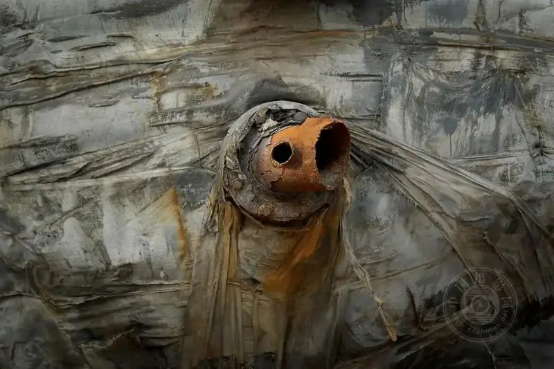
Wounds, shot in Hangu, Tianjin, in 2015.
But from 2020, the workshops and equipment were gradually demolished. Now I can no longer return to the familiar site, and I cannot even recognize the old production workshops. However deep the pain, a photographer must take his duty. Before and after the demolition, I shot a large body of work of the process, as comfort and a memorial for myself.
Zhang Yue: What did your last solo industrial photography show mean to you?
Shao Yajie:My last solo show was mainly a report and a summary before retirement. As I said, shows in different periods carry different feelings. The last show, in 2015, was created even more with heart, feeling, and insight. That work was a conversation with the scene, because the enterprise was facing shutdown. I found insulation wrapped around an old production pipe, with two holes still exposed, and it felt to me like a wounded, helpless worker, eyes wide, holding the post. I thought of the survival of the enterprise and the mood of the workers. Is this not our wound today? That is how the Wounds series was born.
Another group shows a scene with many production pipes, each one looking cold and empty, unlike the bustling plant of the past. At the time I did not shoot it. Back home, thinking about the state of the plant and my own life, I seemed to sense something. So early the next morning, I returned to the empty site and this pipe area and completed the Breathing the Same Air series. At that last show, people finally realized that the content of my work was tightly bound to their own fate. It put many fellow workers into thought, and my work struck a strong chord among them, bringing my retirement show to a perfect close.
Zhang Yue: For this interview, I recently looked at nearly all your work online and in print. I feel the early work was more grounded, mostly showing real scenes of ordinary hardship. In recent years, much of your work focuses on agriculture and ecological protection. Why?
Shao Yajie:Yes. Back then, the camera never left me, and I carried it to and from work. Because I loved humanistic documentary, I shot a great deal of ordinary life. I feel deeply for this subject. When I hear certain songs, I grow moved and sad, and I think about how to express their lives. In recent years, since I retired, I have fewer chances to shoot outside, but the camera cannot leave my hand. Now every plant and tree in my hometown is a subject for me. Deep down, I still want to photograph people. Once I find a target, I follow it to the end.
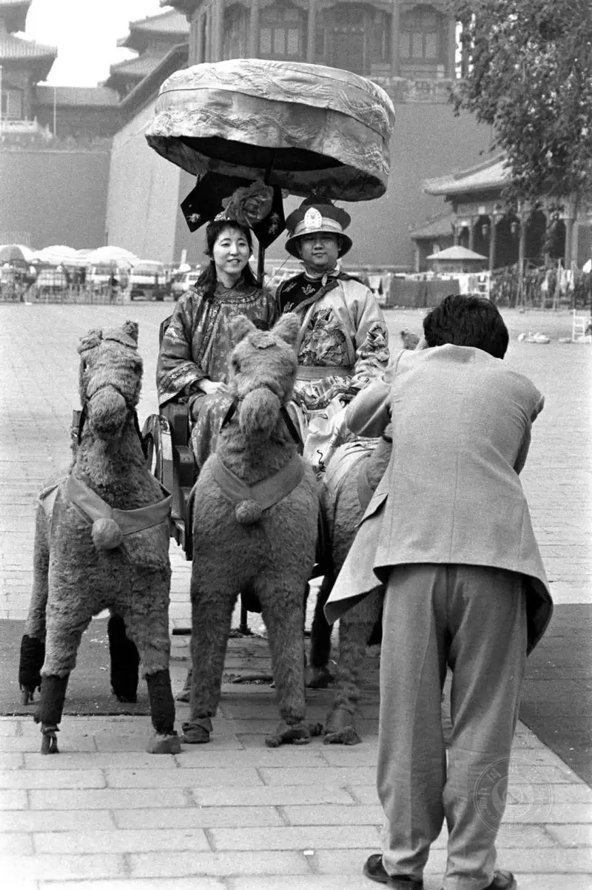
Five Thousand Years, shot in Beijing in 1998.
Coming to Beijing for a visit, taking photos is one of the most important tasks,
and this distinctive photo spot in front of the Meridian Gate drew many tourists.
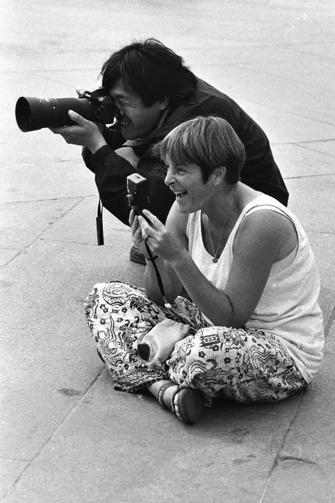
Chinese and Foreign Focus, shot in Beijing in 1997.
Every day on Tiananmen Square, many Chinese and foreign visitors take photos or keep mementos here.
Zhang Yue: About how many series have you shot in recent years? Which ones have you followed long term? Is there any insight to share?
Shao Yajie:In recent years, by shooting the life around me, I have published more than 70 series on official accounts nationwide, and they have drawn attention and praise. Of course, what I follow is not earth-shaking. It is just grounded, ordinary life, and I touch these small things with my heart. I have a few long-running series. Space to Survive of the Plant shows the old enterprise against modern city building, contrasting the old workshops and site pipes with the city's growth, especially the rows of new apartment blocks, to show the survival problem of the old enterprise. Giving Up and Holding On, which I took several years to complete, also shows, through small issues in the workers' lives, how ordinary people's attitudes have changed in today's society.
My earliest series was in 2008. Except for the holidays when the workers did not come, I shot every day of that year, and the series The Station of Life was completed this way. It shows a group of young migrant workers waiting for their shuttle bus each morning. Because the workers come and go freely, the people waiting each day were different. Through spring, summer, autumn, winter, wind, frost, and rain, the workers experienced much, felt much, and grew much, and I gained much too: I came to understand even more deeply that life is the source of photographic creation. Through that year, I kept a daily on-site diary, which left me the marks of time and became a support in my heart.
Zhang Yue: In this top-ten group, I feel each photographer has his own trait. What do you think yours is? What is special about your work?
Shao Yajie:I feel my main trait is showing the large through the small, because I like this way of expressing things. When I shot photos at the enterprise, I tried this method. Each year the enterprise held an award ceremony, and in the past we photographed the plant leaders giving prizes and shaking hands with the model workers. Later, I instead photographed the people outside the hall beating gongs and drums to welcome the models in. Although the leaders did not like such photos in the paper, feeling they did not show their greatness, these works were well received whenever I sent them to professional media. For example, after our synthesis workshop was named an advanced youth post by the Communist Youth League Central Committee, an award ceremony was held. I avoided the handshake with the leader and instead photographed the instant when many workers raised their medals. My news photo I Take a Photo with Honor Too was soon published at length by China Youth News and China Chemical News. So using the small thing I discover to reflect the big event, replacing the stiff leader formula with a living scene, and turning reporting that only aims the lens at officials into a people's view, is the inevitable development of photography and of the times.
My style is mainly humanistic and documentary, because I believe showing people holds the deepest meaning of photography. At the mobilization meeting for Party history study on February 20, 2021, President Xi Jinping said the country is the people and the people are the country. I think these words added to my confidence in showing ordinary people. A few years ago, when I was in Guangxi with the China Chemical Photographers Association, I found a vegetable farmer lowering her load in front of a park. Watching the energetic dancers inside, she was moved and began to dance along, in unfamiliar steps. When the eye sees it, the hand should follow. I could not let that moving moment slip away. I picked up the camera and shot We Take a Few Steps Too. The work shows the new outlook that the reformed countryside has brought to farmers. It won first prize in the COFCO Cup Harmonious Society photography competition. Being grounded taught me the warmth and heat of this ground, and the richness and variety of the stage around me. In fact, good work is all around us, if we observe and discover with care. Life is the art that happens, and this art in turn plays out a colorful life. Life is a classroom, life is a teacher, and life makes me pay more attention and love.
In 2006, I did follow shooting for a friend's child's wedding. The job was dull and tiring, but it was also the best chance to shoot. In the morning, the bride was all ready, waiting for the groom to come and take her away. At that moment, the family's two small dogs, which they had raised for years, stood on their two front legs at the double-glazed window, looking in. I had an idea when I saw this, but I could not show the interaction with the bride. Then the dogs barked more loudly. Hearing her two darlings, the owner turned and, moved, looked out the window. When she saw the reluctant look on her darlings toward their sister, she was overcome. In the instant she turned, with the click of my shutter, the work The Wedding Day came into being. It shows how, as people's lives improve, pets enter the home and live in harmony with people. The work was selected in 2006 for the Safe China National Photography Art Exhibition, jointly held by CCTV and Popular Photography magazine. In 2021, it was selected for the Grand Photo Exhibition of Chinese People's Life 1921-2021, held by the China Federation of Literary and Art Circles, the Chinese Photographers Association, and others, and a collection was published.
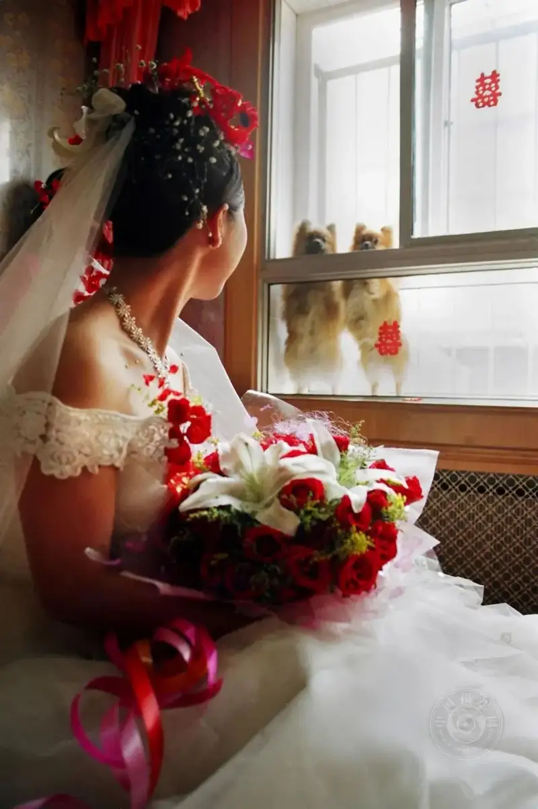
The Wedding Day, shot in Hangu, Tianjin, in 2006.
On the day the bride leaves to be married,
the pair of small dogs she raised stand inside the double window,
looking at the bride with reluctance.
Zhang Yue: I see that in 2021 you were nominated for the fourth China Photo Network top-ten award, and after two more years of effort you finally took the title. Given your years in photography, your body of work, and your achievements, it is well deserved. As a top-ten photographer, do you have any special insight to share?
Shao Yajie:Yes. I am very glad to be chosen for the 2022 top-ten award. First, I thank China Photo Network for launching this event that helps photography grow, and I thank the photography experts who worked hard on the judging and the comrades who supported me warmly. Although being chosen has recognized my work, that is now past, and the road ahead depends on myself and my work. I feel that life is endless, and so is photography. I will use true feeling to express our time and our people. The image comes from the heart, and I will carry on as always.
Zhang Yue: I hope photography brings you even more joy. Thank you for the interview.
Zhang Yue
Reporter for China Photo Network,
a post-90s woman of Chinese literature, based in Beijing,
who has published hundreds of thousands of words of arts criticism and political commentary.
She is now a master's student in photography and digital media at the graduate school of the Chinese National Academy of Arts,
with a special love for documentary photography.